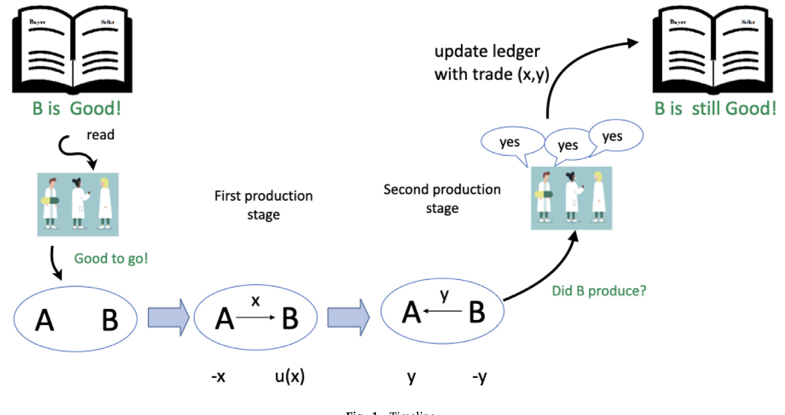
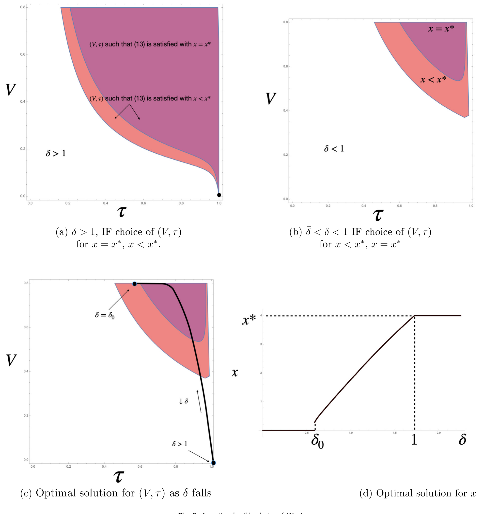
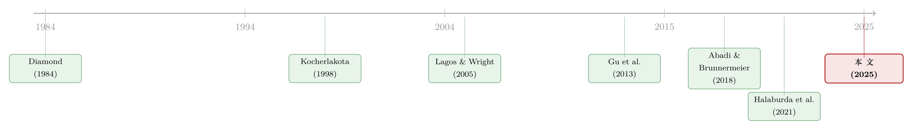

谁来给账本盖章？——去中心化记账，到底什么时候才划算
本文读的是 Auer, Monnet & Shin (2025, Journal of Financial Economics)：在一个有信用的交换经济里，把「更新账本」的权力交给一个人还是一群人，取决于验证者的跨期激励——当未来的回报足够诱人时，中心化的单一记账者反而最优；只有当跨期激励变弱、而且验证者本身就是市场里的交易者时，去中心化才真正划算。换句话说，「无需可信第三方」并不是一句天经地义的口号，它是有价格的。
1 引言：货币，其实是一本「账」
先从一个看似哲学、实则很实在的问题说起。货币到底是什么？陶罐、金属、纸钞，形态各异，但 Kocherlakota（1998）那篇名为 Money is memory 的经典告诉我们：货币的本质是一种社会记忆，是一本记录「谁在过去给社会贡献过、谁还欠着账」的总账。只要这本账存在、且人人可查，很多原本需要货币才能实现的交易，单凭一本「普遍账本」（universal ledger）就能复制出来。
问题是——这本账，谁来记？
在现实世界里，答案几百年没变过：央行和商业银行。它们是被信任的中介，集中地维护着每个人的余额，集中地完成转账。这套中心化记账（centralized record-keeping）体系，是今天货币体系的骨架。然后，区块链来了。Nakamoto（2008）那份白皮书最蛊惑人心的一句话是：账本的更新，可以交给一个去中心化的验证者网络，「无需可信第三方」（without the need for a trusted third party）。
这就抛出了本文真正要回答的问题：
把更新账本的权力分散给多个验证者，在经济上到底是不是一件划算的事？ 什么时候该集中、什么时候该分散？
这其实是一个非常古老的问题的现代版本。罗马诗人尤维纳利斯（Juvenal）问过一句话——quis custodiet ipsos custodes，谁来看守看守者？机制设计大师 Hurwicz（2008）把它正式搬进了经济学（参见 Rahman, 2012）。区块链让这个问题第一次有了真金白银的赌注：记账的人（验证者）凭什么会老老实实记账？
2 两个技术解决不了的摩擦
要回答这个问题，作者先把读者的注意力引到两个技术本身无能为力的摩擦上——这是全文的支点。
第一，没有任何技术能强迫一个验证者去签某一笔交易。 验证是有成本的，尤其当它需要去核对链下（off-chain）发生的事件时——这正是加密行业所说的「预言机问题」（oracle problem，见 Caldarelli, 2020）。既然有成本，验证者就需要激励才肯干活。
第二，没有任何技术能阻止一个验证者同时给两本互相矛盾的账本盖章。 这就是所谓的「历史回滚攻击」（history-reversion attack）。
这两个摩擦的共同点在于：它们都不是工程问题，而是激励问题。再精巧的共识算法，也改变不了「验证者是一个有自己小算盘的理性人」这个事实。于是，账本的治理，本质上是一道机制设计题。
接着，一个自然的问题是：既然要给验证者发钱，到底要发多少、发给几个人、用什么投票规则？这正是本文要内生化（endogenize）求解的东西。
3 模型：一个需要「记忆」的信用经济
本文的模型建立在 Gu et al.（2013）之上，而后者又借用了 Lagos & Wright（2005）的方法论。设定很干净，我一步步讲。
时间与人。 时间离散、无穷期，贴现因子 β̃ ∈ (0,1)。每一期分早、晚两个生产/消费阶段，各有一种不可储存的物品。经济里有两类永久身份的人：单位质量的早期生产者（early producer）和单位质量的晚期生产者（late producer）。早期生产者能生产晚期生产者想消费的「早物品」；晚期生产者能生产早期生产者想消费的「晚物品」。
偏好。 两类人的效用函数分别是：
$$U_e(x_e, y_e) = x_e - y_e, \qquad U_\ell(x_\ell, y_\ell) = u(x_\ell) - y_\ell.$$
这里 x 是消费、y 是生产（成本）。早期生产者的效用是线性的——作者特意这样设，是为了得到干净的比较静态。u(·) 连续、递增、凹，且 u(0)=0；并假设存在交易收益，即存在某个 x 使 u(x) > x。
匹配与存活。 每期，自然选出测度为 α 的早、晚生产者两两配对，所以任一生产者被匹配上的概率是 α。期末，每个人以概率 σ 存活，于是有效贴现因子是：
$$\beta = \sigma\tilde\beta.$$
把可行性条件代进去（生产等于消费），可以只用两个变量描述一个配置：x 代表早期生产者的产出（也是晚期生产者的消费），y 代表晚期生产者的产出（也是早期生产者的消费）。下图 1 把这套两阶段的时间线画了出来。

Figure 1
核心张力来了。 晚期生产者没有承诺能力（limited commitment）。如果没有任何记账技术，结论是冷冰冰的：晚期生产者永远不会为早期生产者生产，唯一能实现的配置就是自给自足（autarky），即 (x, y) = (0, 0)。交易，崩了。
这一步是理解全文的钥匙：账本之所以有价值，是因为它能让「赖账」这件事留下痕迹、进而被惩罚。账本不是装饰，它是交易得以存在的前提。
4 账本如何「管住」赖账者
于是引入账本技术。账本把每个晚期生产者的历史压缩成两个标签：好（G）或坏（B）。一旦某人的行动和他事先的承诺不符，他就被永久打上 B——B 是一个吸收态（absorbing），背着 B 标签的人此后既不消费也不生产，相当于被逐出经济。
那么，一个配置 (x, y) 在什么条件下能被实现？除了两个参与约束 u(x) ≥ y 和 y ≥ x，关键是晚期生产者的还款约束（repayment constraint）：今天我付出成本去生产，是因为这样能保住好标签、换来未来持续交易的收益。把这个权衡写下来，就是本文最该被annotate的一个不等式：
把 y = x 代入，所有激励可行（incentive feasible, IF）的配置就由下面这个不等式刻画：
$$\beta\alpha\, u(x) \;\geq\; \big(1 - \beta(1-\alpha)\big)\,x.$$
而有效率配置 x* 解 u'(x*) = 1；只有当 β 和 α 都足够大时，它才落在可行集里。
读到这里，你可能觉得一切都很「routine」——作者自己也这么说。因为到目前为止，我们一直把账本当成一个从天而降、自动运转的东西。但真正关键的一步在于：这本账，是由一群也需要被激励的「人」来更新的。
5 反转：把账本交给「人」之后
现在，作者把账本的更新权交给测度为 V 的一群验证者（validator）。验证者也是理性人，他们需要激励才会去核对交易、诚实地更新账本。每一期，账本向新开户的晚期生产者收取 T_ℓ、向新开户的验证者收取 T_v。整个机制要选择的，是验证者的人数、超级多数的投票门槛、验证者的报酬，以及交易配置，在一系列激励相容约束下最大化「交易净收益减去验证成本」。
这就把问题变成了一个虚构的计划者问题（planner's problem）。而它的解，落在一个反直觉的地方。
第一个核心结论：验证者必须拿「租」。 因为既不能强迫验证者干活、也不能保证他不收贿赂去篡改账目，要让共识在均衡里真的达成，验证者拿到的报酬就必须超过其成本——也就是说，他们一定赚租（rent）。这一点和 Abadi & Brunnermeier（2018）一致：没有租，就没有共识。
第二个核心结论，也是全文的题眼：决定该集中还是分散的，是「跨期激励」。 验证者之所以不篡改账本，是因为未来源源不断的报酬现值足够高、篡改一次就血本无归。于是：
- 当跨期激励强（未来报酬现值很高）时，一个赚着大额租金的单一验证者就足以被信任。此时交易规模停在 first-best 水平，中心化反而最优——多一个验证者只会带来重复验证的冗余成本。
- 但恰恰当跨期激励弱时，要阻止单一验证者作恶变得极其昂贵。最优设计于是增加验证者人数、同时缩小每笔交易的规模，把「行贿一个验证者」的诱惑压下去。
换句话说，去中心化不是一种美德，而是一种在跨期激励不足时不得已的、有代价的替代方案：它逼你放弃全体一致（unanimity），退而求其次用一个更弱的共识形式。
这正是论文标题里「治理」（governance）二字的分量：账本的集中或分散，不是技术品味问题，而是由「验证者有多在乎未来」这一个经济变量内生决定的。
第三个核心结论：分散必然走向「利益相关者经济」。 作者证明，只有内部验证（internal validation）——即验证者本身也是市场里的交易者——才能支持多于一个验证者的均衡。原因很直觉：当验证者自己也在这个市场里交易，他就对「市场别出乱子」有一份天然的、内在的利益。于是交易与验证之间出现了范围经济（economies of scope）。这一点和 Gu et al.（2013）「更高的租可以约束中介」的逻辑一脉相承。
这群验证者之间玩的，是一个带有公共品供给（public good provision）色彩的共识博弈：当且仅当一个超级多数的验证者达成一致，共识才算达成。作者用全局博弈（global game，见 Carlsson & van Damme, 1993；Morris & Shin, 1998, 2003）的方法求解，得到一个干净的结论——验证者达成某一既定共识水平、且这是唯一的、可由占优策略求解的均衡，当且仅当他们赚到的报酬高于某个阈值。下图 2 刻画了 (V, τ)（验证者人数与门槛）的激励可行选择区域。

Figure 2: Incentive feasible choice of (𝑉 , 𝜏)
6 竞争性账本、匿名、以及低信任环境
讲到这里，故事还差最后一块拼图。前面都是一个「计划者」在求解，可现实里没有计划者。于是作者证明：多个相互竞争的账本，可以实现社会计划者的（受约束）最优。道理很自然——竞争性账本为了招揽用户，会去最大化用户的期望效用，并只收一笔不扭曲的、一次性的总额费用（lump-sum fee）来覆盖建账的固定成本。即便在低信任环境里，无论账本是匿名还是实名、许可（permissioned）还是无许可（permissionless），都能逼近最优。
匿名这一层尤其精巧。在匿名版本里，账本只记录账户及其活动，不记录账户背后的真实身份。这意味着账户可以被关闭（作为对违约者的惩罚），却拦不住一个人重新开个新户。但机制依然成立：因为「成为验证者」本身要付一笔开户成本，只要这笔成本足够高，就能抹掉验证者收贿的动机——这和「权益证明」（proof of stake）里质押币的机会成本异曲同工（关于链上博弈里那些没谈拢的分赃，可参见《暗黑森林里的「过路费」：抢跑、MEV 与区块链上那场没谈拢的分赃》；关于支付里「匿名」如何变成借款人从贷款人兜里掏走的租金，可参见《隐私不是免费的护身符》）。
7 文献脉络
把这条线索摊开来看，本文站在两股研究的交汇处。
一股来自货币理论。 源头是 Kocherlakota（1998）与 Kocherlakota & Wallace（1998）：货币即记忆，一本普遍账本能复制货币的诸多配置。方法论上，Lagos & Wright（2005）提供了可处理的货币搜寻框架，Gu et al.（2013）则把「中介的租如何约束其行为」讲清楚——本文的模型正是它的直系后代。再往前追，银行作为「省下监督成本」的中介这一脉，可上溯到 Diamond（1984）、Williamson、以及 Leland & Pyle（1977）、Boyd & Prescott（1986）。
另一股来自区块链经济学。 Abadi & Brunnermeier（2018）、Biais et al.（2019，「区块链民间定理」）、Halaburda et al.（2021）、Amoussou-Guénou et al.（2019）这一批论文，先后把验证者之间的互动建成博弈，分析道德风险、公共品供给与共识的稳健性。Budish（2025）和 Chiu & Koeppl（2022）则给出了「信任在规模上的经济极限」。

本文的位置因此很清楚：它不纠缠于达成共识所需的具体通信步骤，而是把账本验证博弈嵌进一个重复博弈的货币交换里，用全局博弈确立均衡唯一性，再把验证者人数、交易规模、超级多数门槛一并作为机制设计的解求出来。一句话——它给「记账权该集中还是分散」这个问题，提供了一个有微观基础的答案。
8 评论与延伸（Q&A + 研究方向）
(a) 几个可能的疑问
Q：这和比特币「用电挖矿」（proof-of-work）的逻辑是一回事吗？
不是。比特币那套是用真实算力成本去制造稀缺，本文则把焦点放在跨期激励上：验证者诚实，是因为未来的租现值够高。匿名版本里「开验证者账户的成本」更接近权益证明（proof of stake）里质押币的机会成本，而非挖矿的电费。
Q：既然去中心化要额外付租、还要放弃全体一致，为什么它还可能最优？
因为它是跨期激励不足时的次优补救。当未来报酬现值太低、单一验证者随时可能被买通时，与其养一个靠不住的大中介，不如把验证摊给多人、并缩小每笔交易规模，让「买通一个验证者」的收益小到不值得。代价是冗余验证和更弱的共识，但总剩余更高。
Q：为什么非得是「内部验证」才能撑起多个验证者？
因为外部验证者对市场没有切身利益，要单靠报酬把他们的激励喂饱、成本过高。让验证者同时是市场里的交易者，他就天然希望市场顺畅运转——交易与验证之间出现范围经济，这正是「利益相关者经济」的来源。
Q：全局博弈在这里到底解决了什么？
解决了多重均衡。超级多数投票的共识本质上是个协调博弈，天然容易有多个均衡。引入全局博弈结构后，作者得到一个唯一、可由占优策略求解的均衡，并把「共识能否达成」干净地映射成「报酬是否高于某阈值」。
Q：匿名为什么没有摧毁这套机制？
因为惩罚的对象是「账户的好声誉」而非「人」。账户可被关闭，新户可被开立，但只要开验证者账户要付足够高的成本，收贿的诱惑就被抹平。匿名带来的漏洞，被开户成本这道「闸」堵住了。
Q：竞争性账本会不会逐底竞争、把安全性卷没？
在本文框架里不会。竞争性账本为招揽用户而最大化用户期望效用，并以一次性总额费覆盖固定成本——这笔费用不扭曲交易边际，于是竞争反而把结果推向（受约束）社会最优。这是个偏乐观的结论，也是后文该追问的地方。
(b) 几个可能的研究问题与提案
1. 稳定币储备的「验证者租金」能不能被测出来？ 【经济故事】本文说共识离不开验证者赚租。稳定币发行方/做市验证节点的收益，是否真如理论所言「超过成本」？租金的高低，是否随其储备透明度、跨期声誉而变？ 【可行性】中。可用链上数据 + 主要稳定币发行方的储备披露/审计报告构造「租金」代理，识别上靠披露事件的时间变化做事件研究，难点在于成本端难观测。
2. 许可型 DLT 用于公司债结算，能省下多少「重复验证」？ 【经济故事】本文预测：跨期激励强时中心化最优，弱时才该分散。公司债的清结算正处在中心化（DTCC 等）与许可型 DLT 试点的拉锯中，是检验「冗余验证成本 vs. 治理收益」的天然试验田。 【可行性】中。需要试点项目的结算时延/失败率数据与对照组，识别上可用试点上线做双重差分 (difference-in-differences, DiD)，但样本稀少、选择性强。
3. 低信任、跨境环境下的外资持有人记账。 【经济故事】本文强调机制在低信任环境也能运转。新兴市场债券的外资持有人面对的恰是「弱跨期激励 + 低信任」，正是模型预言去中心化更优的区域。外资进入是否真的伴随更分散的托管/记账安排？ 【可行性】低到中。需要分国别的外资持有与托管结构数据（如 EPFR、各国央行托管统计），识别困难，更可能停留在描述性事实层面。
4. CBDC 的中心化 vs 分布式：一道福利权衡的量化。 【经济故事】央行数字货币（CBDC）要不要引入分布式验证，本文给了清晰的判据——看跨期激励强弱。把模型校准到具体支付系统，能算出门槛在哪。 【可行性】中。属结构式校准 (structural calibration) 工作，数据需求小但对参数（β、α、验证成本）的假设敏感，结论稳健性是主要软肋。
9 我的判断
这篇论文最漂亮的地方，是把一个被加密叙事包装得神乎其神的问题——「无需可信第三方」——还原成了一道关于跨期激励的机制设计题，并给出了一个干净到有点反直觉的判据：未来越值钱，越该集中；未来越不值钱，才越该分散。它把货币理论（Kocherlakota 的「货币即记忆」）和区块链经济学（Abadi-Brunnermeier 一脉）真正缝在了一起，用全局博弈钉死了均衡唯一性，这在概念上是扎实的贡献。
要说对识别的担忧（这里更准确地说是对结论稳健性的担忧）：其一，全文是理论，所有「结果」都是命题与阈值条件，没有数据校准，因此「跨期激励强弱」这一关键变量在现实中如何度量，是空白；其二，「竞争性账本实现社会最优」依赖于「一次性总额费 + 用户效用最大化」这组相当干净的假设，一旦账本之间存在网络外部性、转换成本或捆绑交易功能（这正是 Brunnermeier & Payne, 2023 关心的方向），逐底竞争或锁定就可能让乐观结论打折；其三，模型对线性效用、固定匹配概率 α 的依赖，使比较静态干净，但也让人想知道结论对这些设定有多敏感。
后续我最想看到的，是把这套判据落到一个真实的许可型 DLT 试点上——比如公司债或回购的清结算——去检验「验证者人数随跨期激励下降而上升、交易规模随之缩小」这条核心预测，哪怕只是方向性的证据。理论已经把话说得很清楚了，现在缺的是一块能验证它的真实数据。
参考文献
- Abadi, J., & Brunnermeier, M. (2018). Blockchain Economics. NBER Working Paper 25407.
- Amoussou-Guénou, Y., Biais, B., Potop-Butucaru, M., & Tucci-Piergiovanni, S. (2019). Rationals vs Byzantines in Consensus-Based Blockchains. HAL hal-02043331.
- Auer, R., Monnet, C., & Shin, H. S. (2025). Distributed Ledgers and the Governance of Money. Journal of Financial Economics 167, 104026.
- Biais, B., Bisière, C., Bouvard, M., & Casamatta, C. (2019). The Blockchain Folk Theorem. Review of Financial Studies 32(5), 1662–1715.
- Boyd, J., & Prescott, E. (1986). Financial Intermediary Coalitions. Journal of Economic Theory 38, 211–232.
- Budish, E. (2025). Trust at Scale: The Economic Limits of Cryptocurrencies and Blockchains. Quarterly Journal of Economics 140, 1–62.
- Caldarelli, G. (2020). Understanding the Blockchain Oracle Problem: A Call for Action. Information 11(509).
- Carlsson, H., & van Damme, E. (1993). Global Games and Equilibrium Selection. Econometrica 61, 989–1018.
- Chiu, J., & Koeppl, T. (2022). The Economics of Cryptocurrencies — Bitcoin and Beyond. Canadian Journal of Economics 55(4), 1762–1798.
- Diamond, D. (1984). Financial Intermediation and Delegated Monitoring. Review of Economic Studies 51, 393–414.
- Gu, C., Mattesini, F., Monnet, C., & Wright, R. (2013). Banking: A New Monetarist Approach. Review of Economic Studies 80, 636–662.
- Halaburda, H., et al. (2021). Microeconomics of Blockchain and Distributed Ledgers.
- Hurwicz, L. (2008). But Who Will Guard the Guardians? American Economic Review 98, 577–585.
- Kocherlakota, N. (1998). Money Is Memory. Journal of Economic Theory 81, 232–251.
- Kocherlakota, N., & Wallace, N. (1998). Incomplete Record-Keeping and Optimal Payment Arrangements. Journal of Economic Theory 81(2), 272–289.
- Lagos, R., & Wright, R. (2005). A Unified Framework for Monetary Theory and Policy Analysis. Journal of Political Economy 113, 463–484.
- Leland, H. E., & Pyle, D. H. (1977). Informational Asymmetries, Financial Structure and Financial Intermediation. Journal of Finance 32, 371–387.
- Morris, S., & Shin, H. S. (1998). Unique Equilibrium in a Model of Self-Fulfilling Currency Attacks. American Economic Review 88, 587–597.
- Morris, S., & Shin, H. S. (2003). Global Games: Theory and Applications. In Advances in Economics and Econometrics, Vol. 1, 56–114. Cambridge University Press.
- Nakamoto, S. (2008). Bitcoin: A Peer-to-Peer Electronic Cash System.